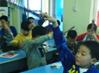
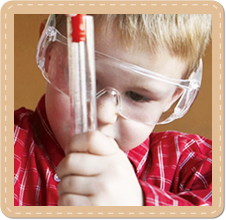

- 首页
- 家庭课程
- 在线课堂
- 爸爸一小时
- 科普天地
- 关于小牛顿
- 联系我们
爱表达 爱观察 爱思考 爱提问 爱动手 爱合作
获得对基础科学知识的了解与认知
热爱科学 喜欢探究 培养科学素养


¥1920
¥1920
¥1920
¥1920
小牛顿科普启蒙教育 让孩子天性得到解放
爸爸每天一小时，让孩子真正的享受“素质教育”
爱表达 爱观察 爱思考 爱提问 爱动手 爱合作
获得对基础科学知识的了解与认知
热爱科学 喜欢探究 培养科学素养
5个为什么变10个为什么，10为什么个变100个，培养孩子独立思考的性格，和对知识的自我追求。
求真的过程是孩子本真的快乐 ，一个个问题突破能让孩子体会到真正的快乐。
只有养育与生存的陪伴，孩子往往无助、孤独、冷漠。精神的陪伴，才能让孩子有安全感，有健全的人格。
小牛顿培养孩子对爱的感受能力，陪伴有利于被需要感的建立，这样的孩子在未来会懂得付出。
科普启蒙教育为什么选小牛顿？
国内首个科学启蒙教育品牌
汇聚专业的精英专家团队
培养孩子的观察能力、动手能力，探究能力、独立思考力。
转变家长的教育观念，注重孩子精神世界的健康成长。
看看这些宝贝的变化吧
我现在就要学小牛顿家庭课程

小牛顿教学心得更多>>
小牛顿告诉你批评孩子讲
是个漫长且不断更新的过程在孩子成长的过 …
是个漫长且不断更新的过程在孩子成长的过 …
小牛顿告诉你批评孩子讲
是个漫长且不断更新的过程在孩子成长的过 …
幼少儿科普天地更多>>
疑问解答更多>>
小牛顿官方微信
北京小牛顿科学启蒙教育科技有限公司 Copyright © 2010京ICP备[10012122]号
北京市海淀区中关村大街甲59号文化大厦1006室